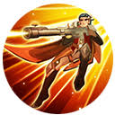

🏠 Home

Giật bắn
Elsu lộn ra phía sau rồi lập tức bắn về phía trước gây sát thương vật lý và làm chậm tốc chạy của nạn nhân. Khi đáp đất Elsu được tăng tốc chạy trong 2 giây, nhưng nếu tung chiêu hoặc đánh thường sẽ lập tức giải trừ hiệu ứng này